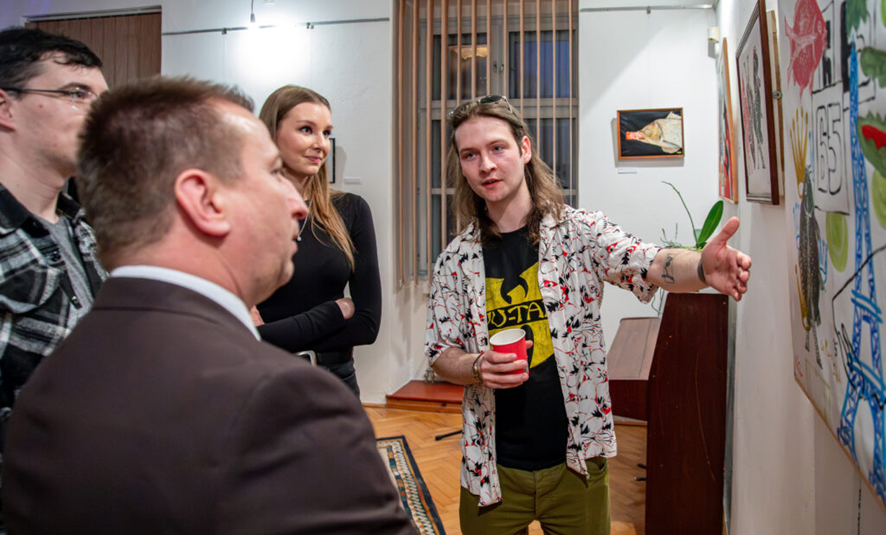
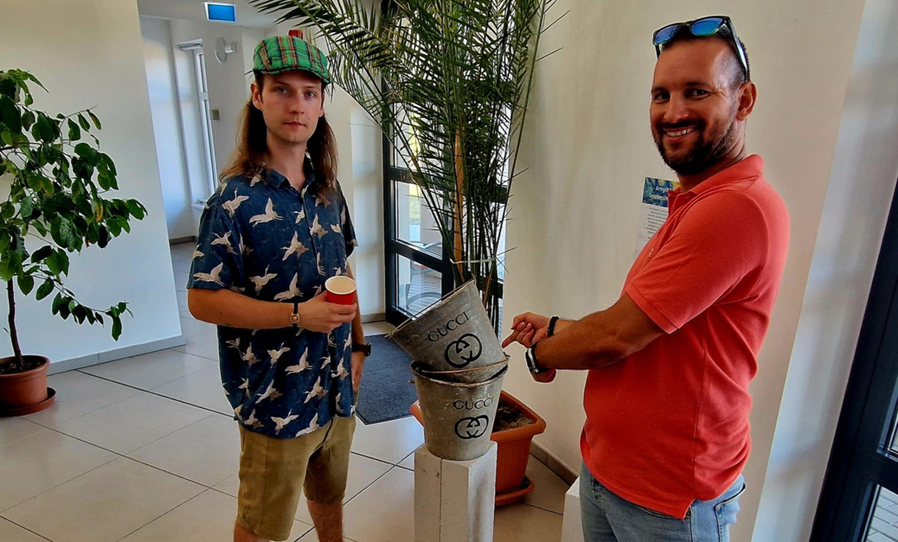
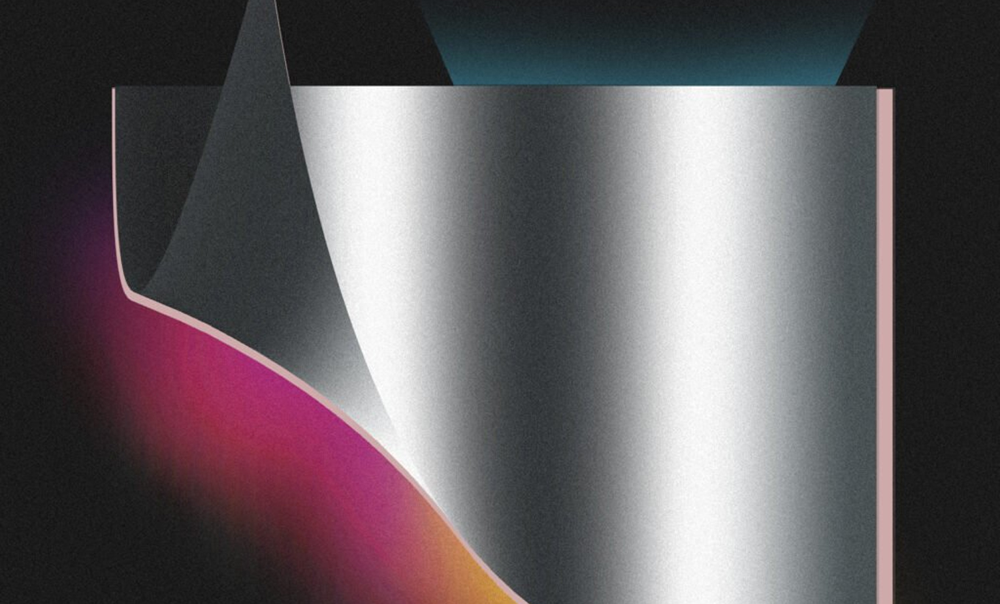
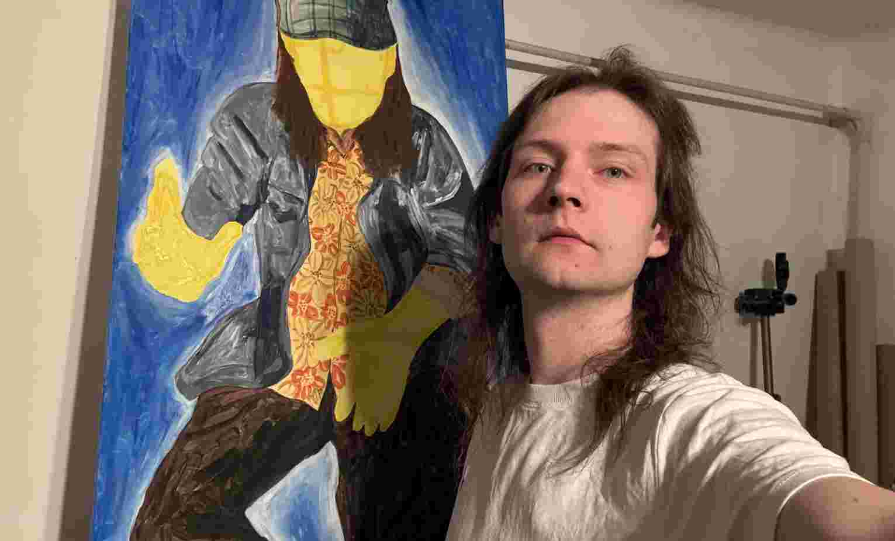

View
Work
Home
About
Fine Arts
Digital
Designs
Photo
blog
contact
news
what i did
ART
Pop Art exhibition | Felsőzsolca

ART
Pop Art exhibition | Emőd

ART
Artist today: Kolumban Szabolcs

ART
Kolumban Szabolcs | painter, artist
